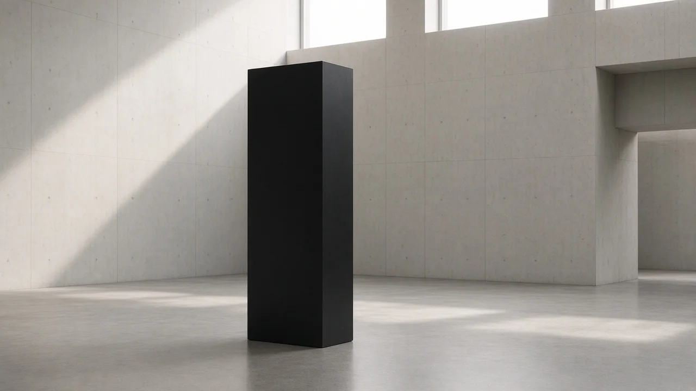
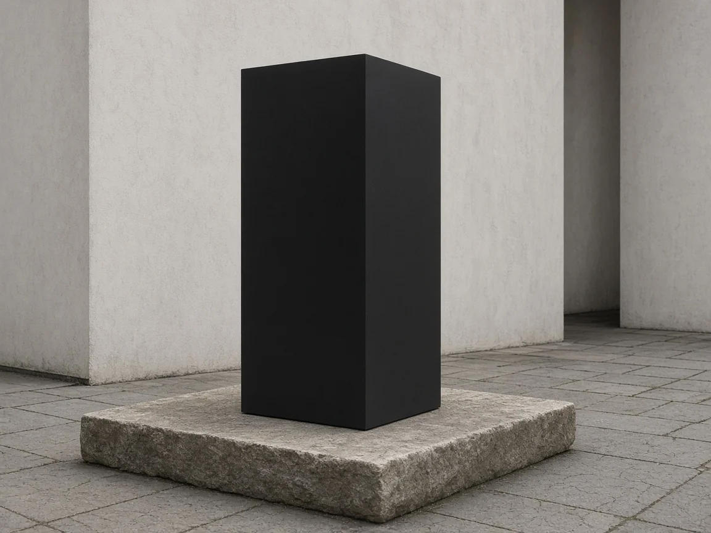
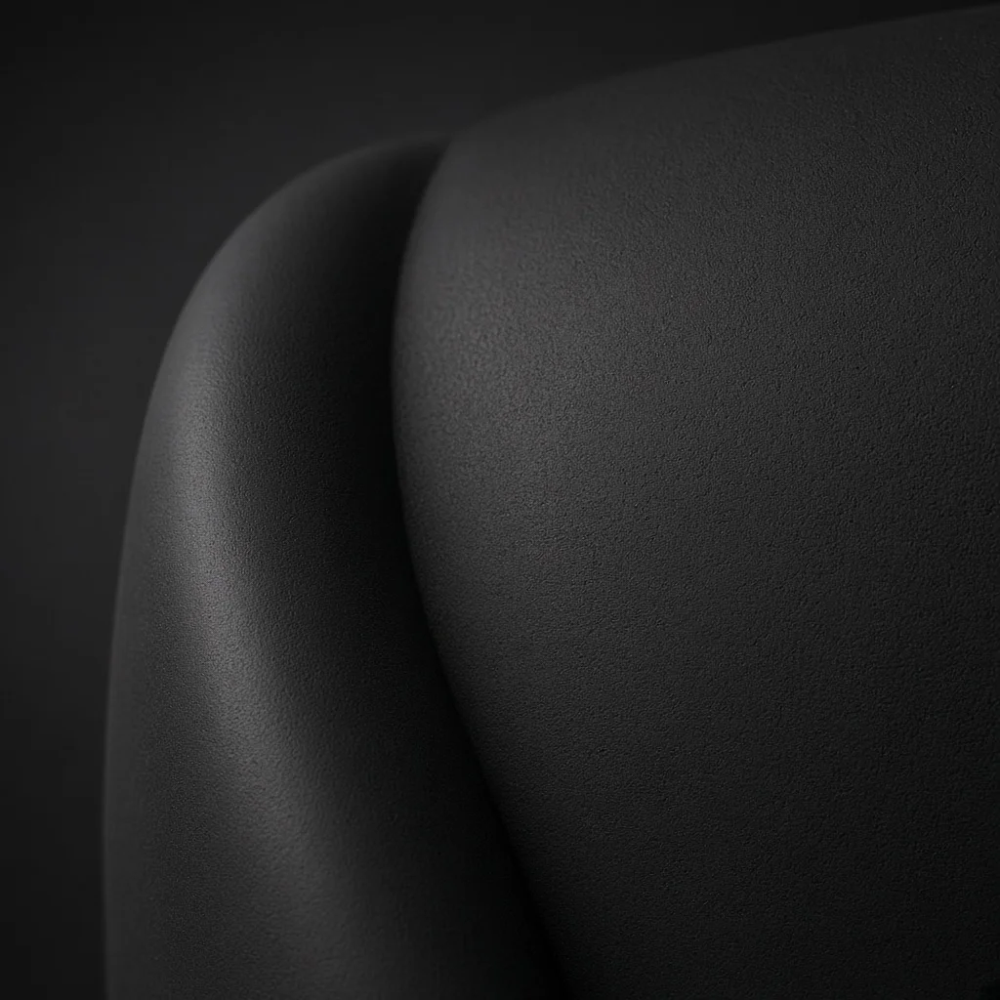
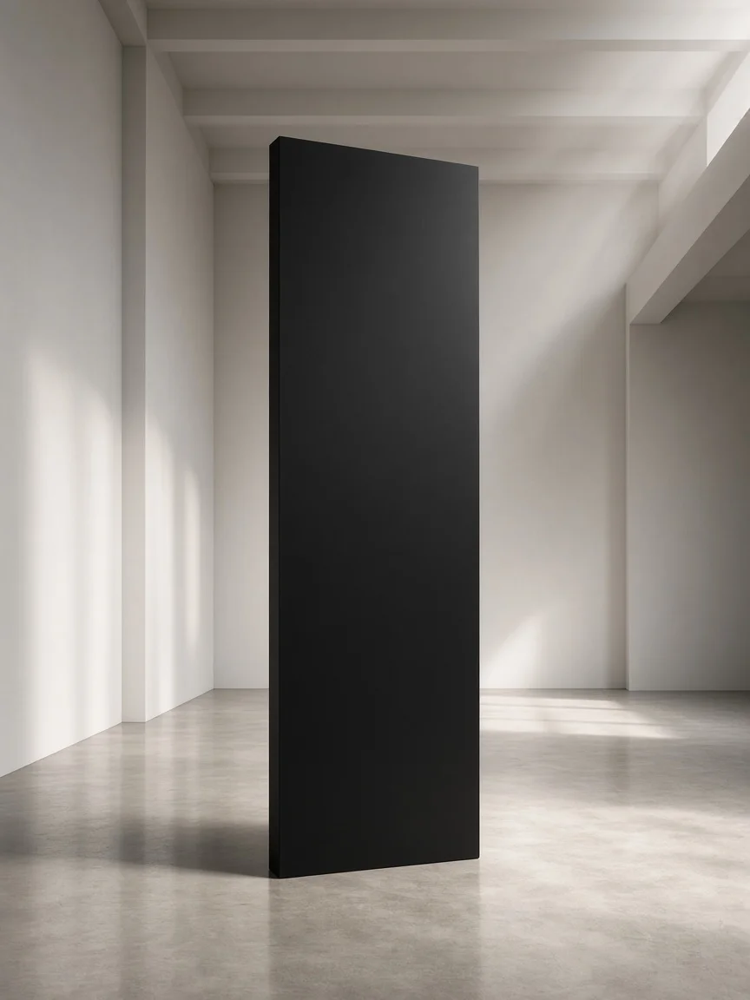

Sentinel Monolith
Overview
A freestanding matte black monolith slab sized for atriums and contemplative courtyards. Its silent presence is said to unsettle visitors with a faint telepathic unease and an evolutionary nudge toward clearer thought — powers claimed only in this fictional catalogue. Presence scale is the only variant. The parent listing is TA-MONO; each presence option has its own SKU and price in the table below.
This is a placeholder product for testing. All content is fictional.
Presence options
| Presence | SKU | Price (NZD) |
|---|---|---|
| Quiet Presence | TA-MONO-QUIET | 9001.00 |
| Telepathic Unease | TA-MONO-UNEASE | 12001.00 |
| Evolutionary Catalyst | TA-MONO-CATALYST | 18001.00 |
Catalogue details
- Unit
- Priced per unit
- Brand
- Clarke Artefacts
- Designer
- T. Bowman
- Year
- 2001
- Warranty
- 10 years
- Quantity per unit
- 1
- Lead time
- 8 weeks
- Supplier SKU
- CA-TMA-SLAB
- Barcode
- 9421900123456
- Coverage area
- 0.36 square metres
- Stock type
- MadeToOrder — Made to order
- Back orders
- Back orders accepted
- Sample
- Sample available — NZ$45.00 (material swatch of the black surface)
Features
Velvet-matte polymer-stone composite face that sheds fingerprints under gallery lighting. Internal mass dampens vibration so the slab stays silent when installed on a standard plinth. Optional base plate accepts concealed floor fixings for seismic zones.
Surface finish is continuous black with no seams on the visible faces. Edge radius is factory-honed so the silhouette reads as a sharp rectangle from viewing distance.
Scope of use
Intended for indoor atriums, museum halls, and sheltered courtyards where a single freestanding slab can be viewed from all sides. Not rated for playground climbing, aquatic immersion, or exterior coastal salt spray without a protective canopy.
One unit covers a footprint of about 0.36 square metres. Installers should leave a clear viewing radius of at least two metres around the slab.



